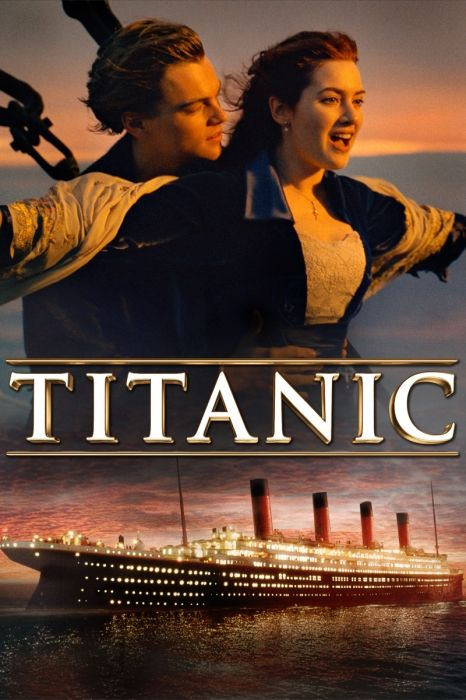
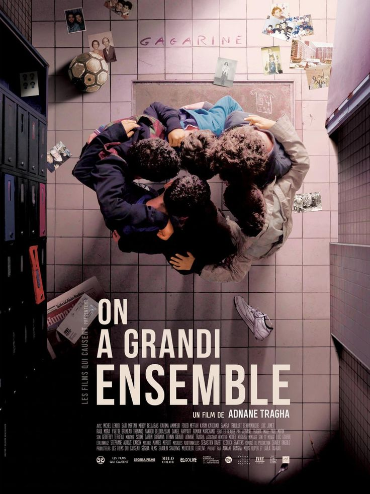
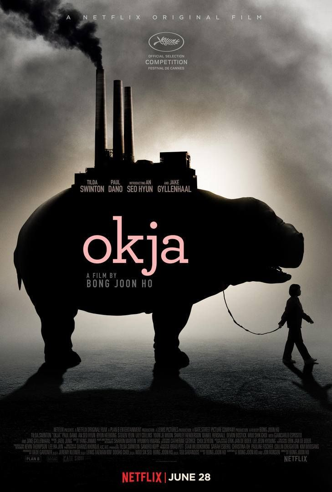

Catalogue des Films du Festival

Sur le chemin de l'école
Release Date: 2023
"Sur le Chemin de l'École" est un documentaire captivant qui suit le parcours de jeunes élèves à travers le monde qui font face à des défis extraordinaires pour se rendre à l'école. Le film met en lumière l'importance de l'éducation et le détermination d'enfants issus de milieux variés, tous animés par un désir commun d'apprendre et de réaliser leurs rêves.

Serial 1899
Release Date: 2024
1899 suit un groupe de migrants européens voyageant en bateau vers l'Amérique, en quête d'un avenir meilleur. À bord du navire, nommé le Kerberos, se trouvent des passagers de différentes origines et cultures, chacun portant ses propres espoirs et secrets. Alors que le voyage progresse, le Kerberos reçoit un signal de détresse d'un autre navire, le Prometheus, qui a mystérieusement disparu.

Les insoumis
Release Date: 2022
Les Insoumis est un film dramatique français sorti en 2023, réalisé par Léo Karmann. L'histoire se déroule dans une société dystopique où un groupe de jeunes rebelles, appelés les Insoumis, s'oppose à un régime autoritaire qui contrôle étroitement la vie de ses citoyens.

Titanic
Release Date: 2021
Titanic raconte l’histoire fictive d’un amour impossible entre deux jeunes gens de classes sociales différentes, Jack Dawson (interprété par Leonardo DiCaprio) et Rose DeWitt Bukater (interprétée par Kate Winslet), qui se rencontrent à bord du RMS Titanic lors de son voyage inaugural de Southampton à New York en avril 1912.

On a grandi ensemble
Release Date: 2023
On a grandi ensemble suit l’histoire de deux amis d’enfance, Thomas et Julien, qui, après des années de séparation, se retrouvent à l’occasion d’un événement marquant de leur vie. Le film explore leur parcours depuis leur enfance jusqu'à l'âge adulte, montrant comment leurs chemins ont divergé et les défis auxquels ils ont fait face.

Okja
Release Date: 2020
Okja est un film dramatique sud-coréen réalisé par Bong Joon-ho, sorti en 2017. Le film suit l'histoire de Mija, une jeune fille qui a élevé un super-cochon nommé Okja dans les montagnes de Corée du Sud. Okja a été génétiquement modifiée par une grande multinationale, la Mirando Corporation, qui prétend promouvoir l'élevage durable.

Un petit truc en plus
Release Date: 2024
Un petit truc en plus suit l'histoire de Harry Sanborn, un riche homme d'affaires new-yorkais, joué par Jack Nicholson, qui a pour habitude de sortir avec des femmes beaucoup plus jeunes que lui. Lorsqu'il se rend dans la maison de plage de la mère de sa dernière petite amie, il fait la rencontre de Erica Barry, une dramaturge de renom interprétée par Diane Keaton. Erica, qui est bien plus âgée que Harry, a des idées bien arrêtées sur les relations et les hommes.
Mulan
Release Date: 2023
Mulan raconte l'histoire de Fa Mulan, une jeune femme chinoise qui se déguise en homme pour prendre la place de son père, Fa Zhou, un ancien soldat, dans l'armée impériale. Lorsque les Huns, dirigés par le redoutable Shan Yu, menacent la Chine, l'empereur mobilise toutes les familles pour défendre le royaume. Mulan, désireuse de protéger son père de la guerre et de l'honneur des femmes, décide de se faire passer pour un homme en prenant le nom de "Hua Jun".
Avatar
Release Date: 2022
Avatar se déroule au milieu du XXIIe siècle sur la planète fictive Pandora, riche en biodiversité et habitée par les Na'vi, une race humanoïde indigène. La Terre, en proie à la surpopulation et à la dégradation de l'environnement, a lancé un programme d'exploration pour extraire un minerai précieux appelé unobtanium sur Pandora. Pour interagir avec les Na'vi, les humains utilisent des "avatars", des corps biologiques contrôlés à distance, qui combinent l'ADN des Na'vi avec celui des humains..
All Quiet on the western front
Release Date: 2021
All Quiet on the Western Front (Titre original : Im Westen nichts Neues) est un film de guerre allemand réalisé par Edward Berger, sorti en 2022. Il s'agit d'une adaptation du roman éponyme d'Erich Maria Remarque, publié en 1929. Le film se déroule pendant la Première Guerre mondiale et offre une représentation poignante et réaliste des horreurs du conflit.